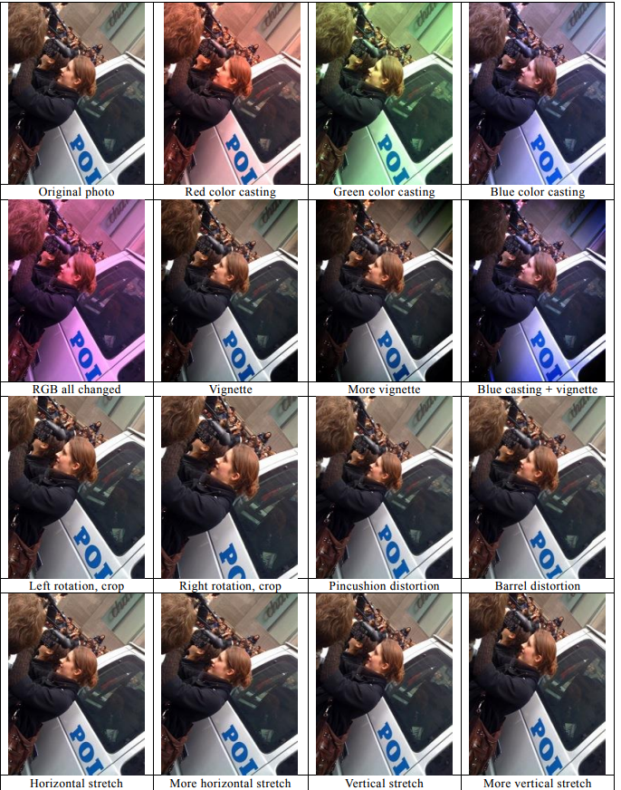
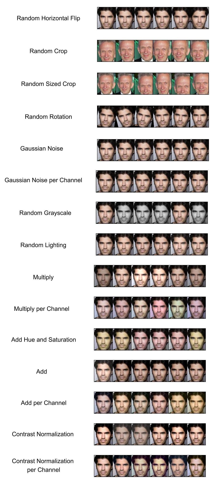
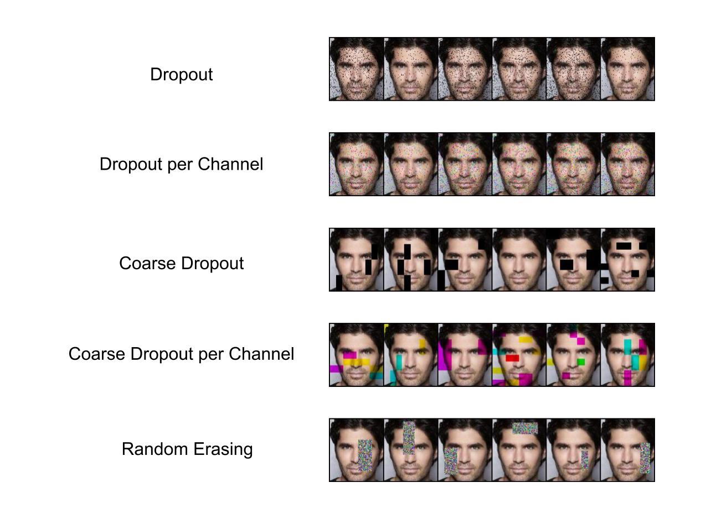
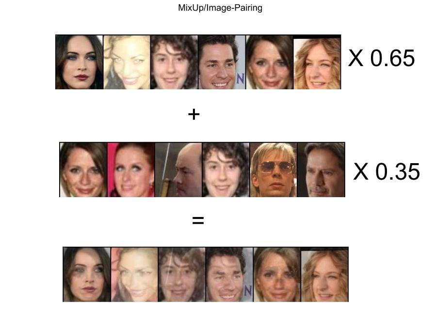
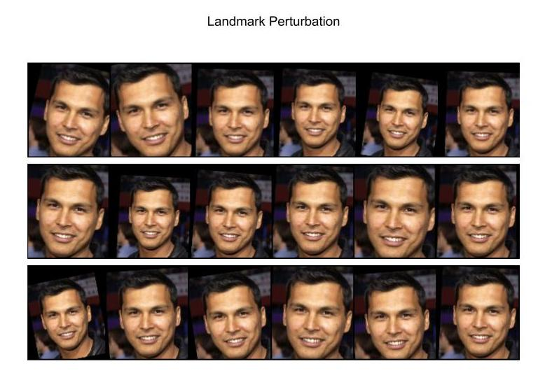
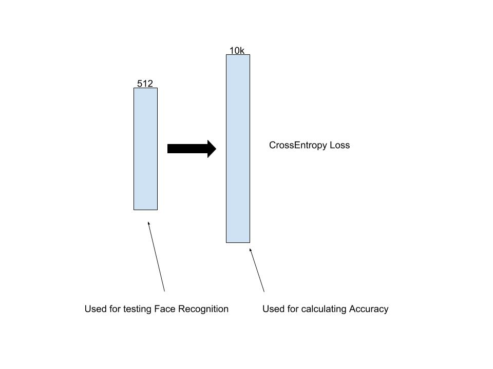
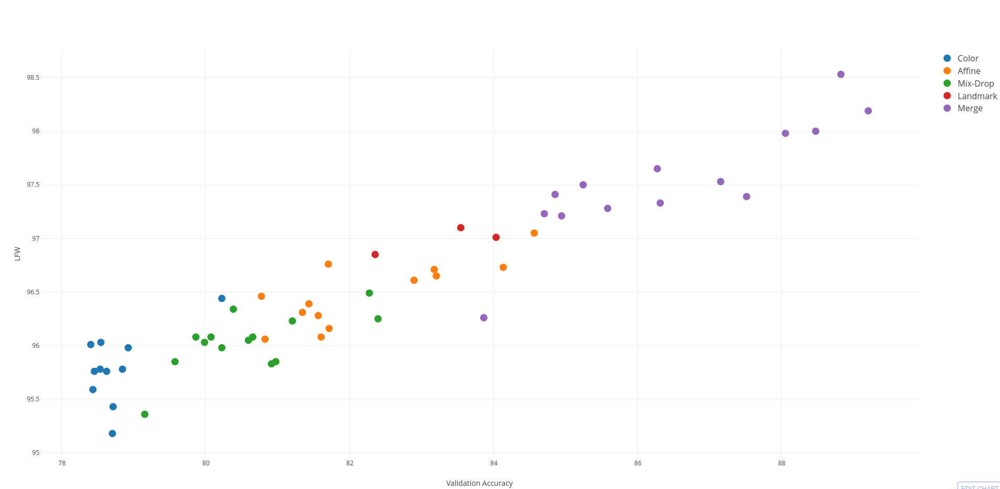

From the beginning of creation of Neural Network, one of the biggest problem was overfitting, what means weak generalization in dataset not seen during draining (it is often named as Generalization Gap). Mainly it was caused by many parameters (ex. AlexNet have 60M, VGG-Net have 230M). In Machine Learning there exist a theorem that the number of parameters should be lower than number of training example, what is normally not the case when using Deep Learning. So what are the main method which enable Deep Learning achieve superior results? By using different technique to reduce overfitting, where 3 of them have the biggest impact:
- Weight-decay: preventing weight from achieving very high values, what can cause remembering training examples
- DropOut: preventing co-adaptation of features by randomly removing them
- Data Augmentation: technique for generating new training examples by sampling original images with modification
If you want to know more about first two, I advice to watch this video from Stanford University, they should clarify you how and why they can work. In this blog-post we will focus of the third one. But firstly some of the historical information. As most of you know, the real breakthrough in Computer Vision was caused by winning entry from Geoffrey Hinton team in ImageNet, which learn Deep Convolutional Network having 60M parameters. How they manage to do so? By preventing overfitting using DropOut and Data Augmentation. Exactly, they use Random-Crop (very powerful technique according to many papers), flipping image Right-Left and Random Lighting Perturbation (changing the intensities of images). So what they do exactly? In fact, they make their dataset many times bigger what cause that network does not see same image many times. Also, it was in line with beliefs Hinton about How does the brain works?, as he believed that brain are making image transformation. Referring to statement Father of Deep Learning, did you see fanny video which animate his story (it was presented at NIPS conference)? If not, it is worth watching:
In next year’s the more powerful networks was designed, which also need a more powerful technique for preventing overfitting. GoogLeNet does exactly that by adding Random-Resized-Crop technique (it does scale image by making it smaller or bigger with changed aspect ratio followed by Random-Crop). As you can suppose, this is not end as researcher found this as a easy and fulfilling expectations method for getting better model. A very extreme way of checking it was done by researcher from Baidu, which make use from a large number of Data-Augmentation technique achieving best results of that time. Most of their technique include extending image perturbation by changing intensities values, but they not settle down in Deep Learning community.

In summary, the following general Image Transformation was introduced:
- Random-Crop
- Random-Flipping
- Random-Resized-Crop
- Random-Perspective-Transformation
- Random-Image-Lighting-Perturbation
- Random-Image-Color-Perturbation
There are some papers/blogs which benchmark this technique on general Image problem, like
- Improving Deep Learning using Generic Data Augmentation
- Data augmentation benchmarking on CNN training
We said, that there are so many advantages of Data Augmentation technique. Are there any Dark Side of them? It’s said that there are two of them. First disadvantage is possibility of model underfitting to data because of too heavy regularization method (ex. When we use weight-decay, DropOut and several DA technique). Then we have two options: making regularization less aggravating or trying the bigger model. At a research stage we recommend taking the first option and then gradually adding another regularization method. The second disadvantage is difference between distribution of training set and test set. Using Data-Augmentation make images look much different from their original counterpart then our network may not work nice at test set, so generalization gap may be bigger than we except. For such situation many researcher propose to learn the network without any DA technique for couple of epoch after out network does not improve. We think that there could be the third disadvantage also, we will explain it later.
But what about the Face Recognition? Here story is different as the aim is different. First of all, in contrast to general image problem, object (exactly face) which need to be recognized is already detected. Also, most of time the face is aligned to have always the same position to make learning easier. This is why most of the time Face-Recognition are using just Random-Horizontal-Flipping (as it does not change the position of face). Rarely Random-Crop is used, but it look like it also may work. There is one nice paper which already benchmarked many available technique, I advice to go through it, Data Augmentation for Face Recognition. Also there are several new Data Augmentation technique which are not widely tested, maybe they will we working for our case? So, our questions which we will asking and trying to answer will be:
- What are best Data-Augmentation technique which can be used for Face-Recognition?
- What combination of Technique Works best?
- Can we beat model with DropOut
Base Experiments
So what exactly technique we will be using? Here is the image with all base technique which we will be using. Most of them are basic one, but we also include many technique from fantastic Image-Augmentation library imgaug. If you want to read more about them, look here . Other are just base technique from PyTorch (library we used for experiments). Also I have used some open-source implementation, which we found at GitHub.
Enough of introduction, let’s make experiments to check the influence of each model. As stated at blog-post-1, here we will be using Baseline model without DropOut, because we want to see even small difference in performance. Also, for Random-Crop and Random-Sized-Crop we will be using 3-different input image size with different value of padding (the bigger padding the bigger input samples space). Here are the results, where the first part of table is Affine transformation and second one Color/Lighting.

| Idx | Method | Val Loss | Val Acc | LFW | LFW Blufr1-Rank1 | LFW Blufr2-FAR 0.1% |
|---|---|---|---|---|---|---|
| {{Idx}} | {{Method}} | {{Val Loss}} | {{Val Acc}} | {{LFW}} | {{LFW Blufr1-Rank1}} | {{LFW Blufr2-FAR 0.1%}} |
The above results are pretty intriguing. Firstly let's talk about Affine Transformation. Look like using any of them provide better results than doing nothing (so good news, DA doesn't hurt model). However looks like there are very sensitive to hyperparameters (like Padding or MinScale). If we would just take random parameters, we could even get worse model than our baseline. It is also worth mentioning that simple Horizontal-Flip is really powerful technique, we didn't expect that! The best Affine model is Random-Resized-Crop with Pad = 10 and MinScale = 0.5.
The story about Color Perturbation is completely different. Here hardly any technique get much better results than No Data Augmentation. The only one is Grayscale. We are not sure if our test are correctly carried out, however even some hyper-parameter search doesn't improve performance.
Recently Introduce Technique
In 2017 the two new data-based regularization technique was introduced:
- Random-Erasing or CutOut: removing the random rectangular area from image
- MixUp or Image-Pairing: mixing values two images (and targets in MixUp) with each other
Removing the values from input image was a popular method in the begging of Deep Learning, it was done by using DropOut as a first layer (it was introduced at Denoising AutoEncoder). But when using convolution layers, it does not work well. It is believed that it is because of Kernel-Idea in CNN, so removing the single values of area does not make a big impact of the final output. When removing the bigger area than kernels then it would make a much bigger influence in final model. This is exact idea behind `RandomErasing`. We also included technique from imgaug library, `DropOut` and `CorseDropOut` (which is sth like `Random Erasing`) with Channel-dependent and independent version.

In the other hand, Mixup is novel idea in which many researcher does not believe it would work. How does mixing the image intensities and target can regularize the model? How does model can learn that this image is 80% of Leonardo DiCaprio and 20% Tom Hanks? For us it is really intriguing, but it may be connected with prediction distribution, act like a regulizer. Just look at the example images from ImageNet created using this technique, could you classify them correctly.
Here are a couple of Imagenet photos with different blending ratios. They are harder to categorize but it is not impossible! cc @ogrisel pic.twitter.com/cqqBVUC0qG
— Xavier Gastaldi (@xavier_gastaldi) 2 listopada 2017
This idea remind us two technique which was developed to make labels noise: Label-Smoothing (Rethinking the Inception Architecture for Computer Vision) and Label-corruption. Also blending the data is not a new idea, SMOTE algorithm was doing exactly the same situation, but it was rather designed for oversampling the minority classes, so was just merging examples (even more than 2) of the same class (what based on the author of mixup paper, does not work well). It look like that mixup is sth like creating Multi-class SMOTE with Label Smoothing. Image-Pairing, in contrast to MixUp, does not merge labels information, just image intensities. In this technique is single hyper-parameter, alpha, which is float number in range <0,1> indicating proportion of intersities taken from both images. If you would like to understand deeper this technique, we recommend great blog by inFERENCe. How it works with Faces?



Before making the experiments, sets clarify hyper-parameters of methods. In case of RandomErasing, we will be make several experiments making probability of using it different and also choosing the maximum size of removed area. Using Mixup only just need to set a range of ratio between two training examples. Here are results.
| Idx | Method | Val Loss | Val Acc | LFW | LFW Blufr1-Rank1 | LFW Blufr2-FAR 0.1% |
|---|---|---|---|---|---|---|
| {{Idx}} | {{Method}} | {{Val Loss}} | {{Val Acc}} | {{LFW}} | {{LFW Blufr1-Rank1}} | {{LFW Blufr2-FAR 0.1%}} |
Before making any summary about results, we would like to point out our problems during making the experiments of Image Pairing idea. According to their paper and inFERENCe blog post, there is no need of smoothing the labels, input data is enough. According to some theoretical analyse, it is true. But our finding are different when the training procedure is exactly the same for MixUp and Image-Pairing. The main difference in training procedure in Image-Pairing is turning on/off it during training (ex. first 3 epoch off, then 5 on, 3 off etc.). With such setting is converge to similar results like MixUp, but without such methodology it diverge. So we advice to use MixUp in any time you want check this kind of technique.
Ok, but how good are this technique in Face-Recognition? Many of them works really well compared to baseline model. They even achieve better validation score than Random-Flip. However, the situation at LFW-BLUFR test is different. Their results are much lower even they obtain lower Validation Loss (Random-Erasing with p = 1.0 vs Random-Erasing with p = 1.0). What does it mean? Look like features representation from network learned with missing data are not so good (or maybe it is wrong conclusion?). This is one of the problem of Face-Recognition, measure for quality of features different than just accuracy in some benchmarks (we will talk about this later).
Face-Specific Data-Augmentation technique
Look like that we are able to get a nice boost using general Data Augmentation technique. But this is not the end. In many years of developing Face-Recognition technique, there are also proposed Face-Specific method, which could work only with them. We know two of them:
- Landmark perturbation: this cause that image alignment is not perfect
- Face-Rendering: rendering the novel views of Face with different Pose
First of all, our earlier experiment in Face-Align, show that accuracy of landmark location didn’t influence the final accuracy. But what if Face Alignment would be not perfect/different every time the model see the image? Having such technique would be equivalent to rotation-resizing-cropping at once, but with much smaller range of values. Just look into below images.

Face-Rendering is much harder topic. In it connected with estimating the 3D-pose of head and generating the new views of face. Based on paper FacePoseNet, it works really well, when 3D pose is estimated very well (using landmarks provide much lower accuracy). However, we have issues with this technique, so we would not conduct extensive experiments using it now (planed it future).
| Idx | Method | Val Loss | Val Acc | LFW | LFW Blufr1-Rank1 | LFW Blufr2-FAR 0.1% |
|---|---|---|---|---|---|---|
| {{Idx}} | {{Method}} | {{Val Loss}} | {{Val Acc}} | {{LFW}} | {{LFW Blufr1-Rank1}} | {{LFW Blufr2-FAR 0.1%}} |
Really nice results! There are comparable to best Affine technique already tested.
Combination of technique
As we know how each single technique works, let's now combine them into more complicated form. The chosen hyperparameter (like type of combination) are just our intuition, there are maybe not best choose. However we wanted to test wide-range of possibilities, where our main aim was creating the best possible model.
| Idx | Method | Val Loss | Val Acc | LFW | LFW Blufr1-Rank1 | LFW Blufr2-FAR 0.1% |
|---|---|---|---|---|---|---|
| {{Idx}} | {{Method}} | {{Val Loss}} | {{Val Acc}} | {{LFW}} | {{LFW Blufr1-Rank1}} | {{LFW Blufr2-FAR 0.1%}} |
Flip-grayscale-erasing (Idx: 0)
This was our test which tied to combine average DA technique to create more powerful method. And results are disappoints, despite having nice Validation results, LFW benchmarks showed that features are even worse form the case of using just Flip. Maybe this is because of erasing?
Combination of 2 Affine method (Idx: 1-5)
Our next idea was just combining the best DA technique and see if they work even better or are redundant. And look like that combining them works pretty nice. Flip boost accuracy of 'CroppingandLandmark-Perturbation' (currently two best methods), in the other hand 'ResizeCropgot comparable results in 'Validation and much worse in LFW protocol. In case of testing Landmark-Perturbation with 'Croppingand 'ResizeCrop, both of them get just some of boost. As we said earlier, Landmark-Perturbation already contain multiple Affine technique, so maybe this collaboration is redundant.
Get best possible model (Idx: 6-9)
Here we decided to use base method Flip-landmark_05-crop20 with pretty decent results and some non-redundant methods, exactly: Mixup, Random-Erase and GrayScale. And all the method get comparable or better Validation results than our baseline model (idx:14). Unfortunately in LFW BLUFR protocol there is huge gap between results. This just bring us again to thought about meaningful of feature representation, how we should measure it correctly as again and again Validation Loss doesn't give pure indication about that.
Models with DropOut (Idx: 10-14)
Look like DropOut technique would stay with us as the regularization applied by Data Augmentation have the different effect on final feature representation. So we just tried several option, however this time we use FaceResNet-DropOut. And we have new kind, Flip-landmark_05-linear_dropout_05! This model is our currently best model overall, it even beat much more complicated models like SphereFace. Here are results from IJBA and MegaFace benchmarks, compared to our best model using same architecture.
| Method | TAR@FAR 0.01% | TAR@FAR 0.1% | TAR@FAR 1% | TAR@FAR 10% | Rank-1 | Rank-5 |
|---|---|---|---|---|---|---|
| {{Method}} | {{TAR@FAR 0.01%}} | {{TAR@FAR 0.1%}} | {{TAR@FAR 1%}} | {{TAR@FAR 10%}} | {{Rank-1}} | {{Rank-5}} |
| Method | Rank-1 | VR@FAR=10−6 |
|---|---|---|
| {{Method}} | {{Rank-1}} | {{VR@FAR=10−6}} |
Summary of Data-Augmentation
Here are all the tests we have done. There are a lot of information here, we will try to summarize them by mainly looking into Validation results. We would order them by usefulness in general Computer Vision tasks:
- Affine Image transformation are really powerful method, it is recommended to try
Cropping, Scaling, Rotatingor all at once at every task you have. - Coarse-Dropout/Random-Erasing are powerful technique, which really can help you creating best-possible model.
- Mixing images intensities is very strong regulator. In general, it can help you to get better model, only if your model is really powerful (as stated in original paper).
- Color Transformation doesn't provide huge boost, but this doesn't preclude them for using. Just doesn't expect huge boost.
- Merging: merging couple of different/same type of technique provide better results, however it need to be treat as hyper-parameter.
Also, Data-Augmentation regularization shouldn't discourage using other technique like DropOut or Weight-Decay, so you try them also.
Note about Feature-Representation
Our last topic in this blog post will be some notes about Feature-Representation. Generally, most of the researcher agreed with argument that: The Better Accuracy you achieved in database, the better representation is learned by model. Then, creating better models/learning methods for achieving better accuracy score should also provide better representation. We have also problem with such formulation if we would take a look of idea of testing Face-Recognition technology. Let's just look into idea how we are testing the real performance of model.

Optimizing the final accuracy, we are doesn't care us much about pre-final-layer, it is optimized in similar fashion like other layer despite the fast it is most importart part of all model. This is why currenty is visible trend in Face Recognition, Image Retrival technology to create task related loss functions, like mentioned several time CenterLoss or Contrastive loss, because they directly interact with final representation of model. We will more about this topic in future blog-post, but we just want to give brief overview of our doubts in general arguments, which we already know.
However, the main topic of this section should be the new findings from series of experiments. Generally, in contrast to our baseline experiments, where more powerfull structure provide better Accuray and Representation, in our experiments is was not always the truth. Generally, the biggest problem occur with using Mixing/Dropping technology, which was providing deformed face to models. From our experiments here better final Accuracy doesn't mean always better Representation. Let's analyse relation between Validation Accuracy and LFW score.

| Affine | Color | Mix-drop | Landmark | Merge |
|---|---|---|---|---|
| 0.79 | 0.57 | 0.67 | 0.79 | 0.86 |
Looking into chart, there is general trend of having higher LFW score with higher Validation Accuracy. In the other hand when we look closer into chart categories and also correlation values, something unusual can be spotted: Color and Mix/Drop transformation have weaker effect on LFW score than other kind of transformation. So we can deduce, that Feature Representation is also less powerful compared to Affine technique having same Validation Accuracy. What does it mean? We are not able to make any clear statement, however look like using distorted/unnatural input image like a training example makes features of normal images less representative. But what if we would test such method in much harder environment, like video-input, as LFW images are really nice. In contrast, IJBA-A also use frames from video for testing. This is why we conduct several experiment to see if maybe this benchmark show us different trendline for our dubious quality methods. We use Flip-landmark_05-crop20 as a baseline.
| Method | TAR@FAR 0.01% | TAR@FAR 0.1% | TAR@FAR 1% | TAR@FAR 10% | Rank-1 | Rank-5 |
|---|---|---|---|---|---|---|
| {{Method}} | {{TAR@FAR 0.01%}} | {{TAR@FAR 0.1%}} | {{TAR@FAR 1%}} | {{TAR@FAR 10%}} | {{Rank-1}} | {{Rank-5}} |
This experiment has helped to see a wider perspective of analysed situation. Using Non-Affine transformation enable to get better Identification score and worse Verification score. Ex. MixUp is second best in Identification and the worst (with very big gap) in Verification. We have meet similar situation in the past, at Blog-1-Baseline, Fudan Architecture have similar situation. We thought that it is because Batch Normalization, but maybe there is other reason? We would like to explain this phenomenon, but currently we are lack of ideas. We need to find the difference coming from testing. The Identification protocol is based on kNN algorithm, find the closest Face in dataset. Verification protocol is based on finding best Threshold for given rules (best Accuracy or False-Accept rate value). So, imagining that we need best possible Face-Recognition system, we need high Identification (for recognizing) and Verification (for saying: Not Recognized) accuracy.
Here we would like to mention about last topic related to measurement of Quality of Representation of features. From our perspective, this topic is not widely studied, some of the measurements come from testing Accuracy. However, we see currently a trend of changing it. Even CenterLoss is somehow the measure compactness of features. Recently, the authors of SphereFace presented their method of measuring the quality of features (Angular Fisher score), which we see as extension of Center idea but with added interaction between classes. We think that it is great idea and we are thinking about adding such measurement for out comparison. More about Quality of Features we will talk analysing the available Loss function, because they are currently the main influencer of final accuracy,
Thanks for reading, any feedback is welcome!